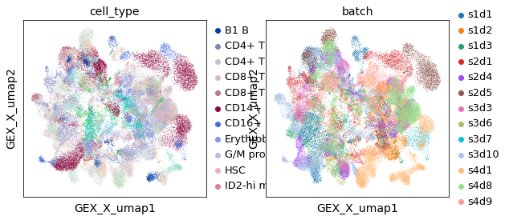
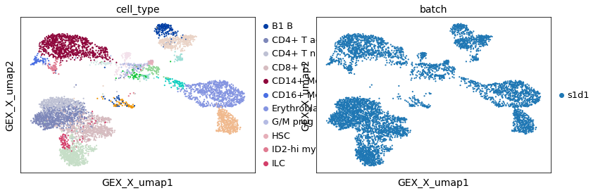
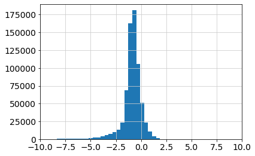
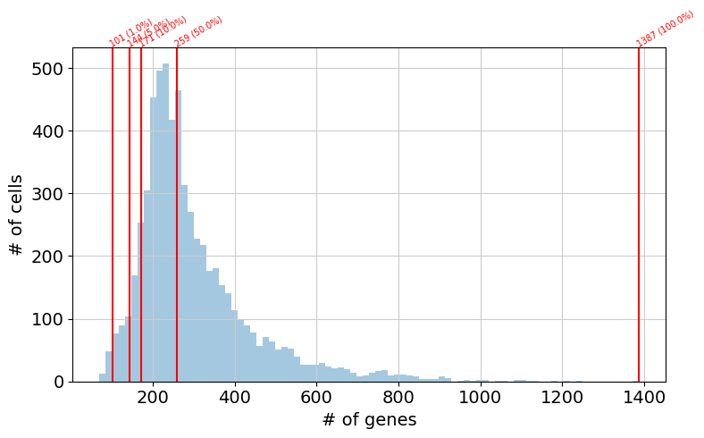
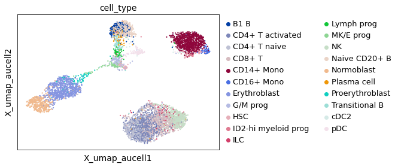
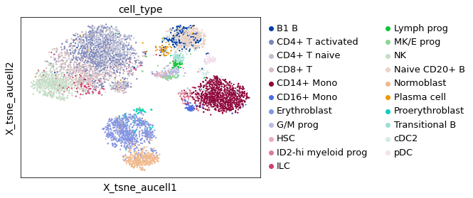
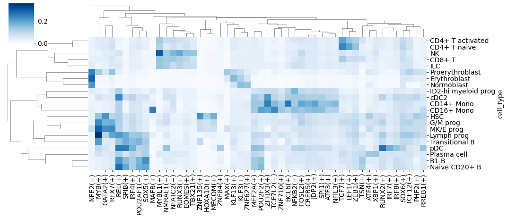
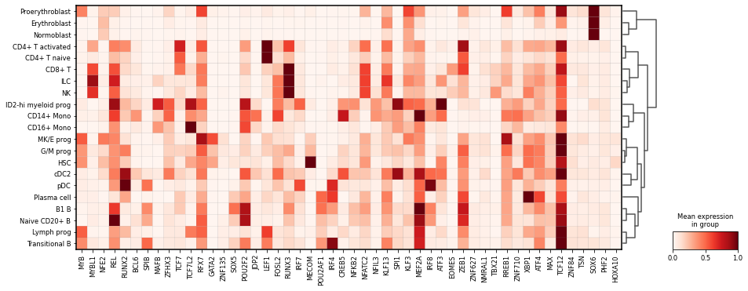

22. 基因调控网络#
关键要点
搭建一个基本流程，使用 NeurIPS 2021 数据集来准备、运行并验证 SCENIC 结果。
检测到一些 TF 调节子（regulon），它们能够用少数几个 TF 的调控潜力来解释所观察到的转录组。
环境设置
安装 conda:
在创建环境之前，请确保 conda 已安装在您的系统中。
保存 yml 内容:
将 yml 选项卡中的内容复制到名为
environment.yml的文件中。
创建环境:
打开终端或命令提示符。
运行以下命令：
conda env create -f environment.yml
激活环境:
创建好环境后，使用以下命令激活它：
conda activate <environment_name>
替换
<environment_name>，名称就是在environment.yml文件中指定的那个。在 yml 文件里，它看起来像这样：name: <environment_name>
验证安装:
通过运行以下命令，检查环境是否创建成功：
conda env list
name: gene-regulatory-networks
channels:
- conda-forge
- anaconda
dependencies:
- conda-forge::python=3.9
- conda-forge::scanpy=1.9
- conda-forge::leidenalg
- conda-forge::jupyterlab
- conda-forge::jupyter_server=1.18.1
- conda-forge::umap-learn>=0.5
- conda-forge::pynndescent
- conda-forge::numpy==1.21.5 # specific conflict between loompy as numba requires numpy < 1.24
- conda-forge::numba
- pip
- pip:
- pyscenic
- nbmake==0.5
- loompy
- MulticoreTSNE
- anaconda:cytoolz
22.1. 动机#
一旦单细胞基因组学数据被处理好，人们就可以在基因组的背景下解析观测到的特征之间的重要关系。在我们的基因组中，基因的激活在细胞核内由 RNA 转录机器控制，它会激活局部的（启动子 promoter）或远端的顺式调控元件（增强子 enhancer），以控制每个基因所产生的 RNA 数量。
从概念上讲，基因调控网络（GRN）指的是这样一种图表示：某些控制转录的基因，即“转录因子”（TF），负责直接控制其靶基因的转录速率（顺式调控 cis-regulation）。与此同时，这些靶基因一旦被激活，又可以负责控制其他下游靶基因（反式调控 trans-regulation）。在计算上，推断 GRN 的方法会考虑基因表达与染色质可及性特征的协同变化，以识别出可以同时被分组、并与少数几个 TF 关联起来的模块。受同一个 TF 活性控制的一组基因，被定义为一个 regulon.
除了协同变化之外，有几种方法还认可“收集并注入先验知识数据”的做法，例如某个 TF 在基因组中的结合位置、或此前报道过的 TF-靶基因关联，用来预先定义基因-基因之间的边，从而引导推断出最受此类证据支持的 GRN。迄今为止，GRN 的基准测试与图像推断等其他机器学习任务不同：带标签的数据稀少且难以验证。因此，有几种方法发展出了自己的基准，主要使用真实数据，把新方法与其他方法进行比较。GRN 推断方法的泛化能力，是调控基因组学中一个活跃的讨论话题；与前几章不同，它需要一个金标准（gold standard），而目前社区还很难就此达成一致、也难以一致地反复使用。
本章的目的，是展示生成 GRN 的一般流程，所用的方法据我们所知，其呈现方式允许在很少的软件依赖下进行验证。鉴于 GRN 工具总体上存在基准测试方面的局限，我们推荐这些工具，但不能说它们在所有可能的场景下都表现最好。我们更愿意把它们作为一个起点：在给定可用数据的情况下，以最低的计算成本去探索它们生成的 GRN 表示。
22.1.1. 从公共数据收集 TF 调节子#
TF 调节子已经在学术研究、汇编这些研究的数据库、以及 ENCODE 等联盟项目中得到注释。作为一般性建议，可以查看 TTRUST [Han et al., 2015], DoRothEA [Garcia-Alonso et al., 2019], KnockTF [Feng et al., 2020]等（用于真核生物 TF 调节子）。对于原核生物 RegulonDB [Santos-Zavaleta et al., 2018] 是一个已知和公认的数据库。
22.1.2. TF 调节子的限制#
TF 调节子的来源和可信度存在一些局限，例如数据来源和实验读出方式。如果某个调节子的数据来源与所关注的细胞类型不匹配，那么结果就无法置于该特定生物系统的背景中。或者，如果实验读出测量的并不是 cis 由所关注 TF 直接引发的调控事件，那么我们的 TF 调节子中可能包含 trans （间接的）调控事件。强烈建议使用在等效生物系统中收集的 TF 调节子。然而，如果没有这样的调节子，由于强行套用先验，对结果的解释可能会有偏倚。
22.1.3. 使用 RNA 数据生成 GRN#
我们将使用 SCENIC 工具，探索 scRNA-seq 数据和预测出的 TF 调节子。具体来说，我们将运行 SCENIC [Aibar et al., 2017] （在 NeurIPS 2021 数据集的某个供体上），并解读结果。本笔记本中描述的主要处理步骤，改编自 SCENIC 的核心教程，参见 教程
22.1.4. 分析结果#
这个笔记本通过推断基因调控网络来解读单细胞 RNA-seq 数据，从而在细胞分化、过渡、扰动等背景下，得到转录因子与“能解释基因表达的靶基因”之间的潜在关联。
22.2. 数据集描述#
10 万个人类 PBMC 的细胞类型聚类，以及 NeurIPS 数据集（其中既包含健康供体，也包含 COVID-19 患者）[Schulte-Schrepping et al., 2020].
22.3. 环境设置#
import warnings
warnings.filterwarnings("ignore")
from pathlib import Path
import loompy as lp
import matplotlib.pyplot as plt
import numpy as np
import pandas as pd
import scanpy as sc
import seaborn as sns
22.4. 准备 NeurIPS 数据集#
我们这里要看的当前数据集已经过预处理（前几章），它包含 69,249 个细胞，注释为 22 种细胞类型。出于批次整合方面的考虑，我们只演示在其中一个（标记为 s1d1，n=6,224 个细胞）上使用 GRN 方法。
加载完整数据集
adata = sc.read_h5ad("../../data/openproblems_bmmc_multiome_genes_filtered.h5ad")
adata.shape
(69249, 129921)
使用标签 GEX 仅取 RNA 特征的子集
rna = adata[:, adata.var.feature_types == "GEX"]
del adata
sc.pp.log1p(rna)
rna.obs.batch.value_counts()
s4d8 9876
s4d1 8023
s3d10 6781
s1d2 6740
s1d1 6224
s2d4 6111
s2d5 4895
s3d3 4325
s4d9 4325
s1d3 4279
s2d1 4220
s3d7 1771
s3d6 1679
Name: batch, dtype: int64
rna.shape
(69249, 13431)
这里我们选择高变基因，以尽量减少下游步骤的计算需求。不定义 HVG 也可以执行，但会需要额外的计算内存和时间。
sc.pp.highly_variable_genes(rna, batch_key="batch", flavor="seurat")
sc.set_figure_params(facecolor="white")
这是所有供体的全部基因表达数据细胞的嵌入。可以看到，就分组而言，供体的影响盖过了细胞类型，而且尚未执行批次校正方法。
sc.pl.embedding(rna, "GEX_X_umap", color=["cell_type", "batch"])

这里我们只观察供体 s1d1 的细胞。当只观察一个供体的细胞时，就可以根据所提供的注释来识别细胞聚类。
adata_batch = rna[rna.obs.batch == "s1d1", :]
sc.pl.embedding(adata_batch, "GEX_X_umap", color=["cell_type", "batch"])

22.5. 准备 SCENIC#
我们将使用 loompy 把基因表达值转换成 loom 文件。pyscenic 要求以这种文件格式作为输入。除此之外，文件 allTFs_hg38.txt 定义一个与转录因子相关的基因符号列表，在权衡这些基因与其他基因之间的关联时会用到。
## this file has to be downloaded if not found
!wget -nc https://raw.githubusercontent.com/aertslab/SCENICprotocol/master/example/allTFs_hg38.txt
File ‘allTFs_hg38.txt’ already there; not retrieving.
tfs_path = "allTFs_hg38.txt"
loom_path = "data/neurips_processed_input.loom"
loom_path_output = "data/neurips_processed_output.loom"
tfs = [tf.strip() for tf in open(tfs_path)]
作为一种核查，建议确认那些被注释为 TF 的基因确实包含在所提供的输入数据中。如果观察到的基因符号覆盖率不高（例如不到 50%），那么可能是在以下文件中声明的特征名称出了问题 .var，例如用了 Ensembl ID 而不是 gene_symbols，或者当基因组装配来自小鼠、或另一种与人类大小写风格不同的物种时存在大小写差异。
# as a general QC. We inspect that our object has transcription factors listed in our main annotations.
print(
f"%{np.sum(adata_batch.var.index.isin(tfs))} out of {len(tfs)} TFs are found in the object"
)
1160 out of 1797 TFs are found in the object
可在这里通过将标志 use_hvg 改为 False，来选择使用 HVG 还是所有特征。
use_hvg = True
if use_hvg:
mask = (adata_batch.var["highly_variable"] is True) | adata_batch.var.index.isin(
tfs
)
adata_batch = adata_batch[:, mask]
为 NeurIPS 供体创建一个 loom 文件。如果你在这一步遇到错误，请确认 Gene/CellID 等标签是否被正确定义。
row_attributes = {
"Gene": np.array(adata_batch.var.index),
}
col_attributes = {
"CellID": np.array(adata_batch.obs.index),
"nGene": np.array(np.sum(adata_batch.X.transpose() > 0, axis=0)).flatten(),
"nUMI": np.array(np.sum(adata_batch.X.transpose(), axis=0)).flatten(),
}
lp.create(loom_path, adata_batch.X.transpose(), row_attributes, col_attributes)
一旦 loom 文件生成完毕，我们就运行 pyscenic 来生成 TF 与基因之间的关联。TF-基因关联由 GRNBoost 推断，并以 TF 与靶基因之间的有向权重来概括。这一分析的输出是一张表，汇总了所有报告出的关联及其重要性权重。
下面的一些步骤需要指定核心数（num_workers）。请根据可用的计算资源增加该数值。
num_workers = 3
outpath_adj = "adj.csv"
if not Path(outpath_adj).exists():
!pyscenic grn {loom_path} {tfs_path} -o $outpath_adj --num_workers {num_workers}
显示 TF-靶标关联的前几行
results_adjacencies = pd.read_csv("adj.csv", index_col=False, sep=",")
print(f"Number of associations: {results_adjacencies.shape[0]}")
results_adjacencies.head()
# associations: 683484
| TF | target | importance | |
|---|---|---|---|
| 0 | SOX6 | SLC4A1 | 186.835278 |
| 1 | SOX6 | ANK1 | 162.917264 |
| 2 | SOX6 | HBA2 | 143.750583 |
| 3 | SOX6 | SLC25A37 | 127.603415 |
| 4 | HMGB2 | UBE2S | 123.732197 |
可视化权重的分布，以便对从 pyscenic 得到的分位数和阈值做总体检查。正如 pyscenic 的 grn 步骤所给出的，重要性分数服从单峰分布，负值/正值分别表示重要性较低/较高的 TF-基因关联。从该分布的右尾，我们可以恢复出 TF 与潜在靶基因之间最相关的相互作用，它们由基因表达值和 pyscenic 所做的分析提供支持。
plt.hist(np.log10(results_adjacencies["importance"]), bins=50)
plt.xlim([-10, 10])
(-10.0, 10.0)

由于靶基因在启动子处带有 DNA 基序（序列特异的 DNA motif），可以用这些基序把 TF 与靶基因联系起来。接下来，我们用 TF 与转录起始位点（TSS）关联的注释来精化这一注释。
下载由 Aerts 实验室预先计算好的 TSS 注释
!wget -nc https://resources.aertslab.org/cistarget/databases/homo_sapiens/hg38/refseq_r80/mc9nr/gene_based/hg38__refseq-r80__10kb_up_and_down_tss.mc9nr.genes_vs_motifs.rankings.feather
File ‘hg38__refseq-r80__10kb_up_and_down_tss.mc9nr.genes_vs_motifs.rankings.feather’ already there; not retrieving.
# ranking databases
db_glob = "*feather"
db_names = " ".join(map(str, Path().glob(db_glob)))
下载 motif 到 TF 关联的目录
!wget -nc https://resources.aertslab.org/cistarget/motif2tf/motifs-v9-nr.hgnc-m0.001-o0.0.tbl
File ‘motifs-v9-nr.hgnc-m0.001-o0.0.tbl’ already there; not retrieving.
# motif databases
motif_path = "motifs-v9-nr.hgnc-m0.001-o0.0.tbl"
利用启动子处 motif 及其基因关联的目录，通过对先前的邻接（adjacency）进行剪枝，检索出一个邻接子集。这一步在消费级硬件上可能需要几分钟。
if not Path("reg.csv").exists():
!pyscenic ctx adj.csv \
{db_names} \
--annotations_fname {motif_path} \
--expression_mtx_fname {loom_path} \
--output reg.csv \
--mask_dropouts \
--num_workers {num_workers} > pyscenic_ctx_stdout.txt
为了探索所报告的候选，根据经验，建议按相对贡献的排名、或按目测定义的高分位阈值来查看输出，以获得高信噪比。
定义供进一步探索的自定义分位数
import numpy as np
n_genes_detected_per_cell = np.sum(adata_batch.X > 0, axis=1)
percentiles = pd.Series(n_genes_detected_per_cell.flatten().A.flatten()).quantile(
[0.01, 0.05, 0.10, 0.50, 1]
)
print(percentiles)
0.01 101.0
0.05 144.0
0.10 171.0
0.50 259.0
1.00 1387.0
dtype: float64
下面的直方图表示每个细胞检测到的基因数的分布。这一可视化便于在下一步中定义参数 --auc_threshold 。具体来说， --auc_threshold 的默认值为 0.05，在本图中这会选出 144 个基因，用作每个细胞中 AUCell 计算的参考。修改这一参数会影响 AUCell 计算出的 AUC 值的估计。
fig, ax = plt.subplots(1, 1, figsize=(8, 5), dpi=100)
sns.distplot(n_genes_detected_per_cell, norm_hist=False, kde=False, bins="fd")
for i, x in enumerate(percentiles):
fig.gca().axvline(x=x, ymin=0, ymax=1, color="red")
ax.text(
x=x,
y=ax.get_ylim()[1],
s=f"{int(x)} ({percentiles.index.values[i] * 100}%)",
color="red",
rotation=30,
size="x-small",
rotation_mode="anchor",
)
ax.set_xlabel("# of genes")
ax.set_ylabel("# of cells")
fig.tight_layout()

这一步将使用 TF 来计算曲线下面积（AUC）分数，该分数概括了：每个细胞中观察到的基因表达，在多大程度上可以由上述 TF 所调控的靶基因的调控来解释。
利用上面生成的“细胞 × TF”矩阵及这些分数，我们可以只用它们来计算一个新的嵌入。
if not Path(loom_path_output).exists():
!pyscenic aucell $loom_path \
reg.csv \
--output {loom_path_output} \
--num_workers {num_workers} > pyscenic_aucell_stdout.txt
# collect SCENIC AUCell output
lf = lp.connect(loom_path_output, mode="r+", validate=False)
auc_mtx = pd.DataFrame(lf.ca.RegulonsAUC, index=lf.ca.CellID)
lf.close()
import anndata as ad
ad_auc_mtx = ad.AnnData(auc_mtx)
sc.pp.neighbors(ad_auc_mtx, n_neighbors=10, metric="correlation")
sc.tl.umap(ad_auc_mtx)
sc.tl.tsne(ad_auc_mtx)
WARNING: You’re trying to run this on 247 dimensions of `.X`, if you really want this, set `use_rep='X'`.
Falling back to preprocessing with `sc.pp.pca` and default params.
基于生成的 TF 调节子和 auc_mtx 来可视化数据。
adata_batch.obsm["X_umap_aucell"] = ad_auc_mtx.obsm["X_umap"]
adata_batch.obsm["X_tsne_aucell"] = ad_auc_mtx.obsm["X_tsne"]
这张 UMAP 可视化证实，SCENIC 的信号能够捕捉到“持续把大多数细胞群体划分为子群”的调节子。因此，TF 调节子中蕴含着可用于细胞类型识别的信息。
sc.pl.embedding(adata_batch, basis="X_umap_aucell", color="cell_type")

SCENIC 生成的 t-SNE 值的可视化也证实了这种细胞类型分离，对大多数细胞类型而言
sc.pl.embedding(adata_batch, basis="X_tsne_aucell", color="cell_type")

22.5.1. 结果的解释#
import seaborn as sns
auc_mtx["cell_type"] = adata_batch.obs["cell_type"]
mean_auc_by_cell_type = auc_mtx.groupby("cell_type").mean()
用颜色显示排名前 N 的 TF 调节子
top_n = 50
top_tfs = mean_auc_by_cell_type.max(axis=0).sort_values(ascending=False).head(top_n)
mean_auc_by_cell_type_top_n = mean_auc_by_cell_type[
[c for c in mean_auc_by_cell_type.columns if c in top_tfs]
]
一旦我们知道了在所研究的生物系统中起作用的最重要的 TF 调节子，就可以根据每个细胞的分数来检查每个 TF 所估计的活性，或者根据这些 TF 所解释的、每种细胞类型的总体 AUC 来检查（见下方蓝色热图）。
sns.clustermap(
mean_auc_by_cell_type_top_n,
figsize=[15, 6.5],
cmap="Blues",
xticklabels=True,
yticklabels=True,
)
<seaborn.matrix.ClusterGrid at 0x7fc377ccce10>

由于红色热图提示某些 TF 与特定细胞类型强烈关联，我们可以验证它们的表达水平作为额外的佐证。具体做法是：匹配我们想要突出的 TF 名称，并用 scanpy 把它们可视化（红色热图）。
tf_names = top_tfs.index.str.replace(r"\(\+\)", "")
adata_batch_top_tfs = adata_batch[:, adata_batch.var_names.isin(tf_names)]
sc.pl.matrixplot(
adata_batch,
tf_names,
groupby="cell_type",
cmap="Reds",
dendrogram=True,
figsize=[15, 5.5],
standard_scale="group",
)
WARNING: dendrogram data not found (using key=dendrogram_cell_type). Running `sc.tl.dendrogram` with default parameters. For fine tuning it is recommended to run `sc.tl.dendrogram` independently.
WARNING: You’re trying to run this on 2785 dimensions of `.X`, if you really want this, set `use_rep='X'`.
Falling back to preprocessing with `sc.pp.pca` and default params.

通过目视检查并比较各细胞类型的 TF 调节子 AUC 分数和 TF 基因表达，我们可以核实：在若干情况下，某个 TF 的细胞类型特异表达，与某种特定细胞类型相关联，而相应的 TF 调节子在该细胞类型中也处于活跃状态，例如 pDC 中的 RUNX2、CD16+ Mono 中的 TCF7L2、活化 CD4+ T 中的 LEF1。进一步的检查可以用来验证此前的见解和/或更多的关联。
22.6. Quiz#
22.6.1. 理论#
22.6.2. SCENIC#
22.7. 参考文献#
Sara Aibar, Carmen Bravo González-Blas, Thomas Moerman, Vân Anh Huynh-Thu, Hana Imrichova, Gert Hulselmans, Florian Rambow, Jean-Christophe Marine, Pierre Geurts, Jan Aerts, Joost van den Oord, Zeynep Kalender Atak, Jasper Wouters, and Stein Aerts. SCENIC: single-cell regulatory network inference and clustering. Nat. Methods, 14(11):1083–1086, November 2017.
Chenchen Feng, Chao Song, Yuejuan Liu, Fengcui Qian, Yu Gao, Ziyu Ning, Qiuyu Wang, Yong Jiang, Yanyu Li, Meng Li, Jiaxin Chen, Jian Zhang, and Chunquan Li. KnockTF: a comprehensive human gene expression profile database with knockdown/knockout of transcription factors. Nucleic Acids Res., 48(D1):D93–D100, January 2020.
Luz Garcia-Alonso, Christian H Holland, Mahmoud M Ibrahim, Denes Turei, and Julio Saez-Rodriguez. Benchmark and integration of resources for the estimation of human transcription factor activities. Genome Res., 29(8):1363–1375, August 2019.
Heonjong Han, Hongseok Shim, Donghyun Shin, Jung Eun Shim, Yunhee Ko, Junha Shin, Hanhae Kim, Ara Cho, Eiru Kim, Tak Lee, Hyojin Kim, Kyungsoo Kim, Sunmo Yang, Dasom Bae, Ayoung Yun, Sunphil Kim, Chan Yeong Kim, Hyeon Jin Cho, Byunghee Kang, Susie Shin, and Insuk Lee. TRRUST: a reference database of human transcriptional regulatory interactions. Sci. Rep., 5:11432, June 2015.
Alberto Santos-Zavaleta, Mishael Sánchez-Pérez, Heladia Salgado, David A Velázquez-Ramírez, Socorro Gama-Castro, Víctor H Tierrafría, Stephen J W Busby, Patricia Aquino, Xin Fang, Bernhard O Palsson, James E Galagan, and Julio Collado-Vides. A unified resource for transcriptional regulation in escherichia coli K-12 incorporating high-throughput-generated binding data into RegulonDB version 10.0. BMC Biol., 16(1):91, August 2018.
Jonas Schulte-Schrepping, Nico Reusch, Daniela Paclik, Kevin Baßler, Stephan Schlickeiser, Bowen Zhang, Benjamin Krämer, Tobias Krammer, Sophia Brumhard, Lorenzo Bonaguro, Elena De Domenico, Daniel Wendisch, Martin Grasshoff, Theodore S. Kapellos, Michael Beckstette, Tal Pecht, Adem Saglam, Oliver Dietrich, Henrik E. Mei, Axel R. Schulz, Claudia Conrad, Désirée Kunkel, Ehsan Vafadarnejad, Cheng-Jian Xu, Arik Horne, Miriam Herbert, Anna Drews, Charlotte Thibeault, Moritz Pfeiffer, Stefan Hippenstiel, Andreas Hocke, Holger Müller-Redetzky, Katrin-Moira Heim, Felix Machleidt, Alexander Uhrig, Laure Bosquillon de Jarcy, Linda Jürgens, Miriam Stegemann, Christoph R. Glösenkamp, Hans-Dieter Volk, Christine Goffinet, Markus Landthaler, Emanuel Wyler, Philipp Georg, Maria Schneider, Chantip Dang-Heine, Nick Neuwinger, Kai Kappert, Rudolf Tauber, Victor Corman, Jan Raabe, Kim Melanie Kaiser, Michael To Vinh, Gereon Rieke, Christian Meisel, Thomas Ulas, Matthias Becker, Robert Geffers, Martin Witzenrath, Christian Drosten, Norbert Suttorp, Christof von Kalle, Florian Kurth, Kristian Händler, Joachim L. Schultze, Anna C. Aschenbrenner, Yang Li, Jacob Nattermann, Birgit Sawitzki, Antoine-Emmanuel Saliba, Leif Erik Sander, and Deutsche COVID-19 OMICS Initiative (DeCOI). Severe covid-19 is marked by a dysregulated myeloid cell compartment. Cell, 182(6):1419–1440.e23, Sep 2020. S0092-8674(20)30992-2[PII]. URL: https://doi.org/10.1016/j.cell.2020.08.001, doi:10.1016/j.cell.2020.08.001.
22.8. 贡献者#
我们衷心感谢以下人员的贡献：
22.8.2. 审阅者#
Lukas Heumos
Anna Schaar